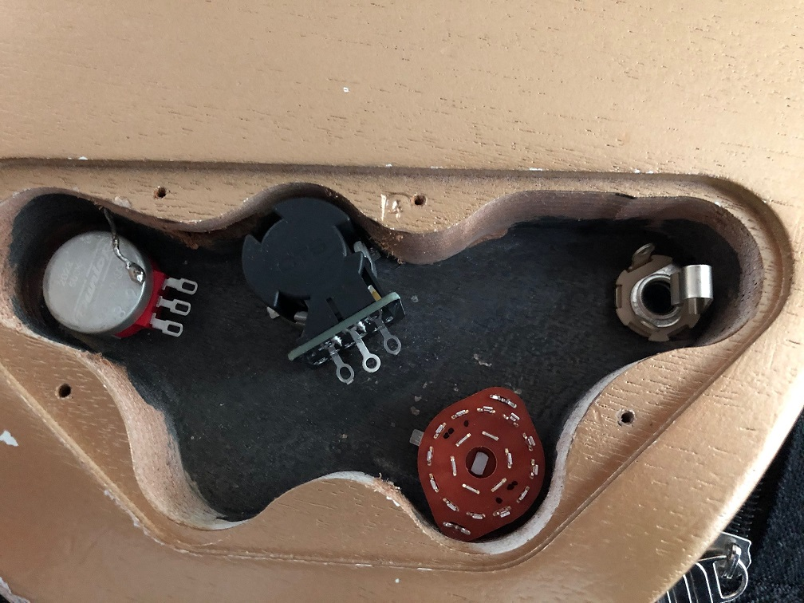
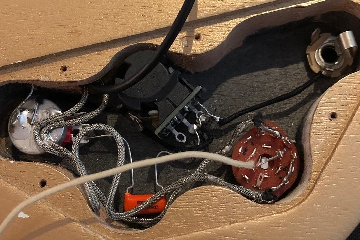
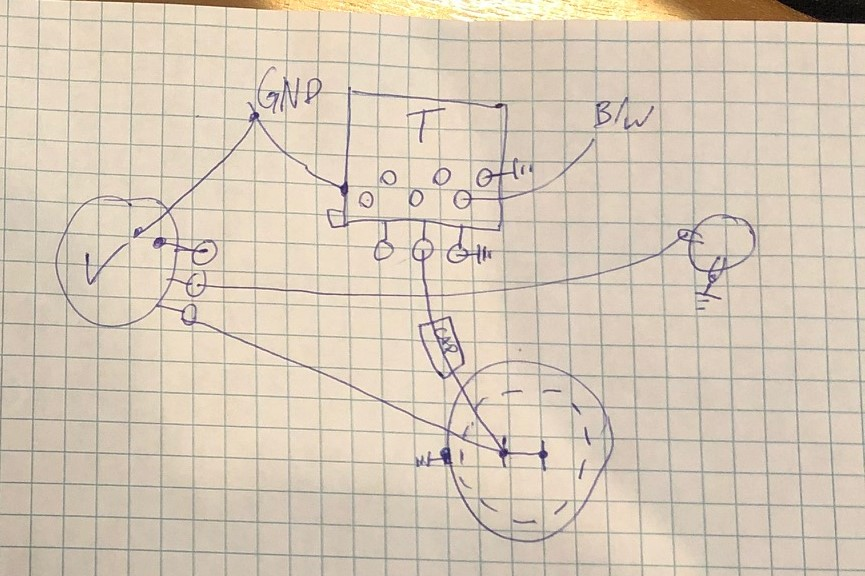

Project 2 - The Guitar

I am very passionate about guitar, I have been playing since 2009. I really love the Gibson SG model so this is a great guitar for me. This guitar originally came with only one pickup, but we decided we wanted to modify it with three pickups and a few extra features.
This guitar has a few cool features, one being the three pickups it has. Most SG style guitars have one or two pickups but we decided to add three. Both outside pickups are double coil humbuckers but the middle is actually a toggleable from single coil to double coil.
In order to switch between pickups, we needed to have a six way rotary switch with a chicken head knob. It changed from bridge, bridge and middle, just middle, neck and middle, just neck and neck and bridge.
The other two knobs are master tone and volume for all the pickups. The middle pickup uses a push pull pot on the tone knob to switch from single to double coil.
The wiring of the guitar took some time to plan out and I used a lot of different resources to figure out how we should do it. In the end we had two wiring diagrams, one specifically for the six way rotary switch and one for everything else.
